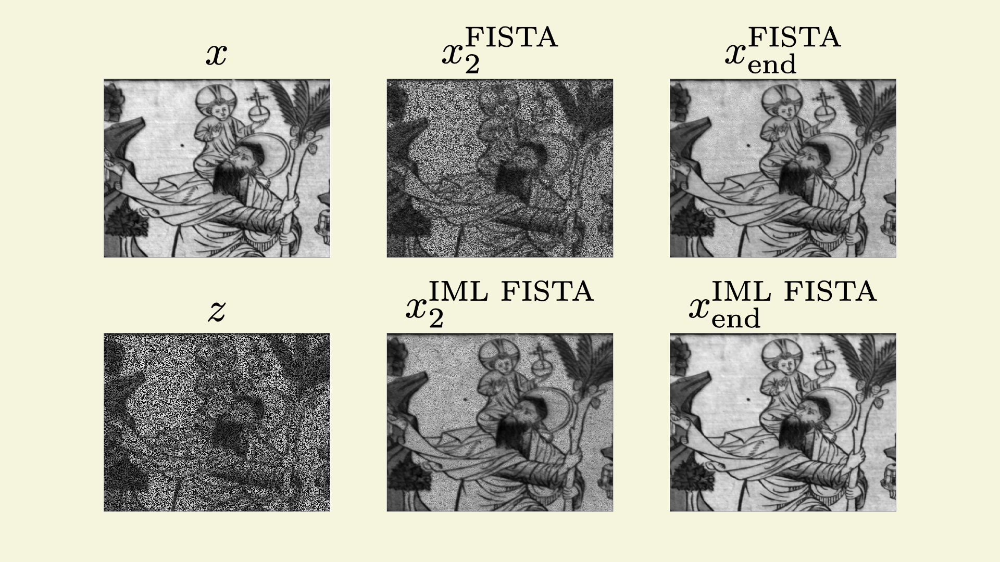

Guillaume Lauga

I am preparing a PhD at École Normale Supérieure de Lyon since November 2021 under the supervision of
Paulo Goncalves,
Elisa Riccietti and
Nelly Pustelnik.
I am a member of the Inria OCKHAM team
of the LIP laboratory and my PhD is funded by Inria.
My work focuses on multilevel optimization methods for proximal based algorithms.
Contact : guillaume.lauga [@] ens-lyon [DOT] fr, guillaume.lauga [@] inria [DOT] fr.
News
- (March 14 2024) Our paper on IML FISTA has been accepted for publication in SIAM Journal on Imaging Sciences:
- 
- Reconstructed hyperspectral image (source) with IML FISTA vs FISTA at 2 iterations and after 14h (end) of CPU time
Publications
-
A multilevel framework for accelerating uSARA in radio-interferometric imaging
G. Lauga, A. Repetti, E. Riccietti, N. Pustelnik, P. Gonçalves, Y.Wiaux.
Accepted to EUSIPCO, Lyon, 2024. -
IML FISTA: A Multilevel Framework for Inexact and Inertial Forward-Backward. Application to Image Restoration
G. Lauga, E. Riccietti, N. Pustelnik, P. Gonçalves.
SIAM Journal on Imaging Sciences 17 (3), 1347-1376, 2024. [CODE] -
Méthodes multi-niveaux pour la restauration d'images hyperspectrales
G. Lauga, E. Riccietti, N. Pustelnik, P. Gonçalves.
Colloque GRETSI, September 2023. -
Sparsity in neural networks can improve their privacy
A. Gonon, L. Zheng, C. Lalanne, Q.-T. Le, G. Lauga, C. Pouliquen.
Colloque GRETSI, September 2023. -
Multilevel FISTA for Image Restoration
G. Lauga, E. Riccietti, N. Pustelnik, P. Gonçalves.
ICASSP, June 2023. -
Méthodes proximales multi-niveaux pour la restauration d'images
G. Lauga, E. Riccietti, N. Pustelnik, P. Gonçalves.
Colloque GRETSI, September 2022.
Talks
- Multilevel Proximal Methods for Image Restoration: Application to Radio-interferometric Imaging, EURO, Copenhagen, June 30-July 3 2024
- Multilevel Proximal Methods for Image Restoration, RICAM Seminar, Johannes Kepler Institute, Linz, June 24, 2024
- Multilevel Proximal Methods for Image Restoration: Application to Radio-interferometric Imaging, SIAM Linear Algebra, Paris, May 13-17, 2024
- Multilevel Proximal Methods for Image Restoration, Séminaire Contrôle et Optimisation, Insa Rouen, April 23, 2024
- Multilevel Proximal Methods for Image Restoration, Seminar at Heriot-Watt University, Edinburgh, April 15, 2024
- Multilevel Proximal Methods for Image Restoration: Application to Radio-Interferometry, SMAI MODE, Lyon, March 26-29, 2024
- Multilevel Proximal Methods for Image Restoration, Workshop on Optimization, Berlin, June 14-16, 2023
- Multilevel Proximal Methods for Image Restoration, Optimization and Control in Burgundy, May 9-11, 2023 [SLIDES]
- Multilevel Proximal Methods for Image Restoration, Séminaire Images Optimisation et Probabilités, Institut de Mathématiques de Bordeaux, May 4, 2023
- Multilevel Proximal Methods for Image Restoration, SIAM CSE 2023 [SLIDES]
Teaching
2023-2024:
Teaching assistant at École Normale Supérieure de Lyon:
- Fundamentals of Machine Learning M1, 10h of tutorials.
- Optmization M1, 28h of tutorials.
2022-2023:
Teaching assistant at École Centrale de Lyon:
- Analyse appliquée, (Optimization and measure theory) 1st year of engineering school, 40h of tutorials.
2021-2022:
Teaching assistant at Université Claude Bernard Lyon 1:
- Fondamentaux des Mathématiques 1, Bachelor of Informatics and Mathematics (1st year), 45h of tutorials.
- Fondamentaux des Mathématiques 2, Bachelor of Informatics and Mathematics (1st year), 19h of oral examinations.
Curriculum
Education:
- Ph.D. Student in Applied Mathematics, ENS de Lyon, 2021-2024
- Engineering School (Applied Mathematics), École Centrale de Lyon, 2017-2021
- M.Sc. in Applied Mathematics, ECL, Université Lyon 1 and ENS Lyon, 2020-2021
- B.Sc. in General Mathematics, Université Lyon 1, 2018-2019